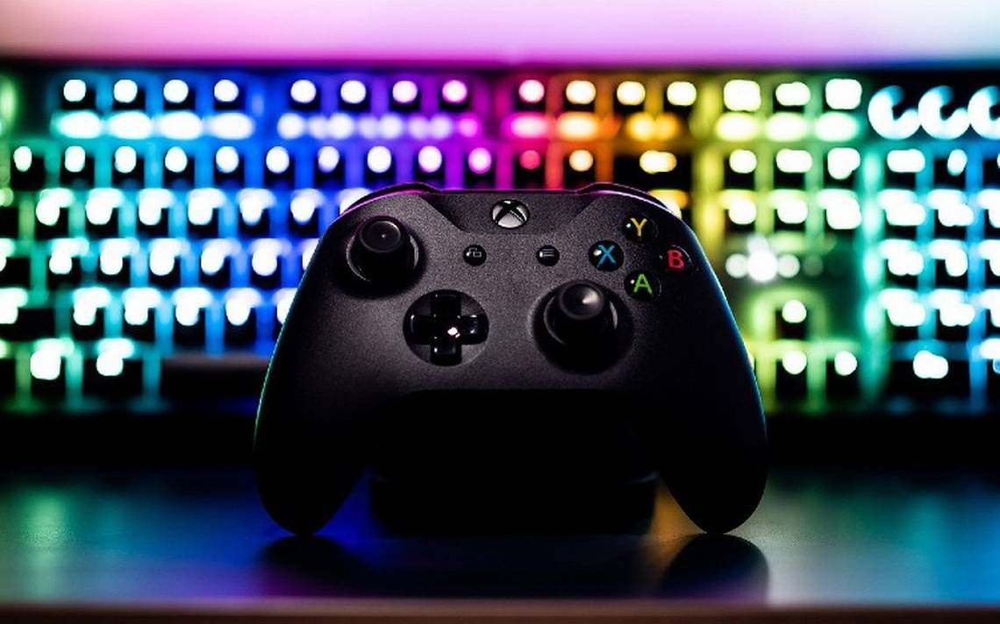

MIS HOBBIES
ACTIVIDADES EN CASA
Ultimamente he pasado gran parte de mi tiempo en la casa debido a la pandemia, asi que los hobbies en mi casa son bastantes, los enlisto aqui abajo:
Jugar Videojuegos

Estudiar Cryberseguridad
 Comer
Hacer Ejercicio
Comer
Hacer Ejercicio
Mi informacion
Nombre: Lopez Perez Alberto Andrei
Grupo: 4CM1
Materia: Tecnologias para Desarrollo Web